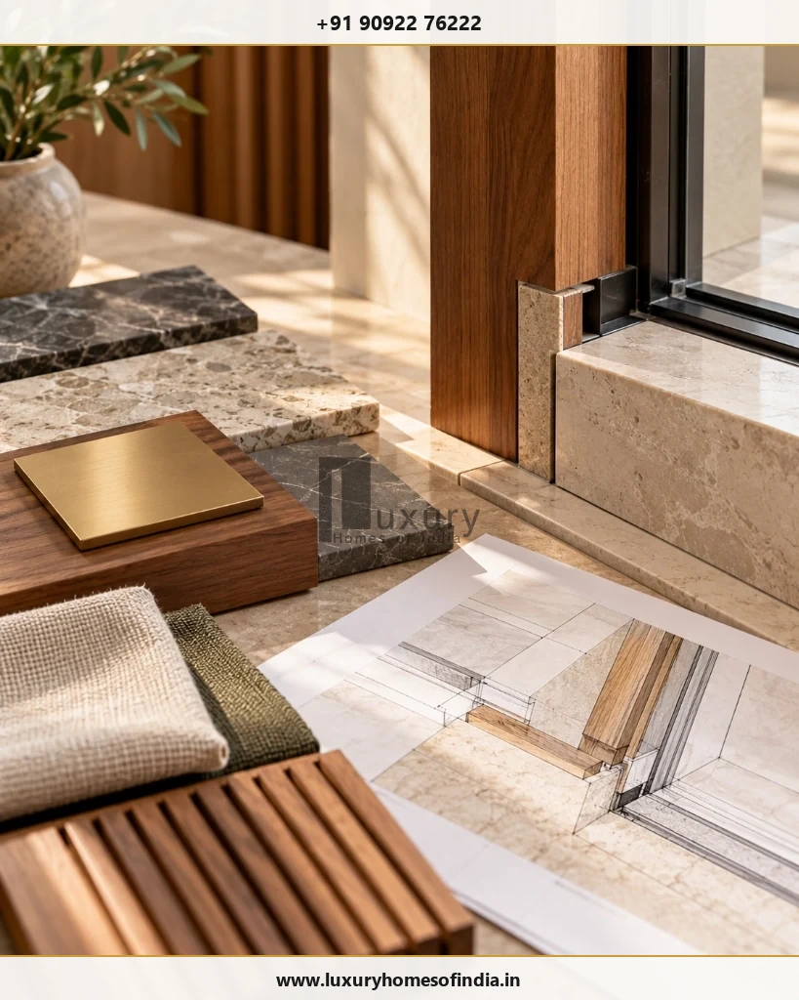

When planning a luxury home, should you hire an architect or a builder first? For a bespoke home, a practical starting point is usually to engage an architect or design professional early, establish the brief and develop a sufficiently detailed design before committing to a construction contract. A builder can be consulted earlier for feasibility and indicative cost, but reliable pricing depends on the drawings, specifications, site conditions and agreed scope.
An architect typically develops the design and provides the professional services included in their appointment. A builder typically executes the construction work covered by the construction agreement. A design-and-build or turnkey firm may combine some of these responsibilities, but the actual inclusions, exclusions and technical duties must be documented.
For a luxury villa in Chennai or elsewhere in India, the right arrangement depends on design complexity, budget, coordination requirements and the level of control you want over individual appointments. This guide explains the differences, the order in which to appoint professionals, how to compare costs and what to verify before signing.
Key Takeaways: Hiring an Architect vs Builder
- Early Design Clarity: Appointing an architect first ensures your layout, elevations, and structural intentions are clearly drafted before requesting construction pricing.
- Feasibility Consultation: Consulting a builder early helps identify structural complexities, site access limits, and material lead-time realities before designs are locked.
- Contractual Alignment: Turnkey delivery combines design and execution under one roof, whereas separate appointments provide independent checks and balances.
- Responsibility Matrix: Clear documentation of who specifies, inspects, certifies payments, and manages handover avoids costly on-site disputes.
1. What Is the Difference Between an Architect and a Builder?
The main difference is their primary responsibility: an architect focuses on design and the professional services agreed with the client, while a builder focuses on delivering construction work under the construction contract.
These roles can overlap. A firm may offer both design and construction, and some projects also appoint a project manager, quantity surveyor or construction supervisor.
The distinction matters because design decisions and site execution must work together. A well-planned house still needs accurate construction, while a technically sound building can fail to meet the owner's expectations if the layout, proportions, lighting or detailing were not considered carefully.
What does an architect do?
Depending on the appointment, an architect may:
- Develop the design brief around the owner's requirements.
- Assess the site and relevant design constraints.
- Prepare concept designs, plans, elevations and working drawings.
- Coordinate structural and building-services consultants.
- Develop specifications and material schedules.
- Assist with tender evaluation and contractor selection.
- Provide agreed construction-stage inspections and design clarifications.
Council of Architecture Scope: The Council of Architecture publishes a scope of architectural services that includes design, site evaluation, technical coordination and periodic inspection. The services actually provided on an individual project depend on the agreed appointment.
What does a builder do?
A builder or construction company typically delivers the work specified in its contract. Depending on the scope, this may include:
- Site preparation and construction sequencing.
- Labour, subcontractor and trade coordination.
- Procurement of specified materials.
- Foundation, structural and masonry work.
- Plumbing, electrical and other installations.
- Plastering, waterproofing and finishing.
- Workmanship checks and progress documentation.
- Contractual rectification and handover obligations.
The builder should construct against the current approved drawings and agreed specifications, with changes documented through the project's formal approval process.
The important distinction: do not rely on job titles alone. Establish who prepares each drawing, who checks it, who approves changes, who inspects the work and who is accountable for correcting defects.
2. Architect vs Builder: A Practical Comparison
| Responsibility | Architect or design professional | Builder or construction company |
|---|---|---|
| Design brief | Develops the brief with the client | Provides feasibility input where agreed |
| Floor plans and elevations | Prepares or coordinates design documents within scope | Executes the approved design |
| Structural engineering | Provides or coordinates services only as agreed | Builds according to the applicable structural documents |
| Materials and finishes | May specify or recommend materials | Procures and installs items within the contract |
| Construction cost | May estimate, prepare documents or assist with tender comparison | Prices and manages the contracted construction work |
| Daily site operations | Not automatically responsible | Usually coordinates construction operations within its scope |
| Design inspections | Provides agreed reviews and clarifications | Checks workmanship and manages site execution |
| Handover | Provides agreed professional documentation | Completes the contractual works and handover obligations |
These are typical role distinctions, not universal legal boundaries. The precise allocation depends on the contract, professional appointments, applicable requirements and the delivery model.
Who should be responsible for quality?
Quality is not a single task assigned to one person. It involves design quality, specified materials, construction workmanship, testing, inspections and documented acceptance.
For example, a luxury bathroom needs suitable waterproofing details, drainage falls, correctly coordinated plumbing, compatible finishes and proper installation. Premium fittings alone cannot establish that the completed bathroom performs as intended.
The project documents should identify who specifies, installs, inspects, tests and signs off each relevant element.
3. Should You Hire an Architect Before a Builder?
For a highly customised luxury home, engaging an architect or design professional early is often a useful starting point. It establishes the design brief and provides a foundation for comparing construction proposals on a consistent basis.
However, early builder consultation can also be valuable. A construction professional may identify access constraints, difficult construction details or cost implications before the design is finalised.
A practical appointment sequence is:
Record room requirements, lifestyle priorities, approximate built-up area, amenities and budget.
Review plot dimensions, access, levels, survey information and relevant planning constraints.
Establish the layout, elevations, spatial relationships and key design decisions.
Arrange the required structural, electrical, plumbing and other specialist designs.
Develop sufficiently detailed drawings, specifications, quantities and exclusions.
Request comparable quotations and examine scope, quality controls, programme and commercial terms.
Sign the relevant appointments and agree how variations, inspections, reporting and handover will work.
You do not need to complete every detail before speaking to a builder. Early discussions can help test feasibility. The key is to distinguish an indicative estimate from a quotation based on defined drawings and specifications.
4. When Is an Architect Particularly Valuable?
An architect can be especially useful when the home requires coordinated decisions that are difficult to resolve through construction execution alone.
Bespoke villa design
A customised home may need careful planning of room relationships, privacy, circulation, natural light and indoor-outdoor spaces. These decisions influence the overall design and the eventual construction scope.
Complex plots and site constraints
Irregular plot shapes, changes in ground level, restricted access and neighbouring buildings can influence the design. Relevant surveys and technical investigations should inform decisions rather than relying on assumptions.
Special architectural features
Double-height spaces, large glazing areas, bespoke staircases and unusual structural forms need coordination between architectural intent, engineering, materials and execution.
Integrated interiors
Kitchens, fixed furniture, lighting, ceilings, storage and architectural detailing can affect one another. Early coordination can identify clashes before installation.
Climate-responsive planning
Orientation, shading, ventilation and material choices can be considered early in the design process. Their suitability depends on the particular site, climate and intended use of the spaces.
The value of design work is not limited to appearance. It also helps clarify decisions, coordinate technical inputs and communicate the intended outcome to the construction team.
5. When Can a Turnkey or Design-and-Build Approach Work?
A turnkey or design-and-build arrangement may suit homeowners who prefer a coordinated delivery model instead of managing multiple independent appointments.
In a design-and-build arrangement, one firm may take responsibility for both design and construction. A turnkey contract may include a broader set of services, potentially extending to procurement, interiors or handover. The terminology is not a substitute for reading the contract.
Before appointment, establish:
- Whether architectural design and working drawings are included.
- Who appoints the structural engineer and building-services consultants.
- Who is responsible for statutory submissions and approvals.
- Which materials, brands and performance specifications are included.
- Whether interiors, landscaping, external works and utilities are included.
- What site inspections, tests and quality records will be provided.
- How progress, costs and programme changes will be reported.
- How variations are priced and approved.
- What the agreement says about defects, completion and handover.
A combined appointment can reduce coordination interfaces, but it does not remove the need for clear technical responsibilities, adequate documentation or contractual accountability.
6. Which Approach Is More Cost-Effective?
There is no universal rule that separate appointments cost less than turnkey construction, or that turnkey is always better value. The total depends on the scope, fees, specifications, procurement, site conditions and risks covered by each proposal.
The most useful comparison is between proposals that cover the same work.
| Cost factor | What to check |
|---|---|
| Professional fees | Design stages, working drawings, inspections and additional services |
| Construction scope | Quantities, labour, materials, subcontracting and exclusions |
| Specifications | Brands, grades, performance requirements and approved alternatives |
| Provisional allowances | What remains unselected or subject to later pricing |
| Programme | Assumptions, procurement dependencies and schedule responsibilities |
| Variations | Written approval, pricing method and programme implications |
| Quality and testing | Required checks, records, testing and acceptance criteria |
| Handover | Documentation, outstanding work and defect rectification obligations |
A lower headline price is not necessarily the lower final cost if it excludes important work or relies on allowances that later change.
Likewise, a separate architect's fee should not be compared directly with a turnkey fee without accounting for the services and responsibilities covered by each.
How to compare quotations fairly
- Give each builder the same drawing set and scope.
- Request an itemised quotation or bill of quantities where appropriate.
- Identify exclusions, assumptions and provisional sums.
- Compare material specifications and acceptable alternatives.
- Review payment milestones and variation procedures.
- Clarify quality inspections, testing and handover.
- Resolve significant differences before signing.
A quantity surveyor or other suitable cost professional may help when the project scope or procurement arrangements warrant additional cost control.
7. How to Divide Responsibilities Before Construction Starts
One of the most useful project documents is a responsibility matrix. It identifies who performs each task and who has authority to approve it.
The following is an illustrative starting point, not a substitute for the signed project agreements.
| Task | Responsibility to establish |
|---|---|
| Design brief and design approval | Homeowner and appointed design professional |
| Structural design | Appointed qualified structural professional |
| Construction pricing | Builder, based on defined scope |
| Procurement and installation | Party named in the contract |
| Design clarification | Design professional within the appointment |
| Daily site coordination | Appointed construction manager or builder |
| Design changes | Relevant professionals and homeowner through written approval |
| Work inspections and tests | Named responsible parties for each work item |
| Payment certification | Person or professional expressly appointed for the task |
| Final handover | Contractually designated parties |
For each task, identify the person who carries it out, the person who checks it, the person authorised to approve changes and the document that records completion.
This reduces ambiguity without assuming that the architect, builder or homeowner automatically performs every function.
8. Questions to Ask Before Hiring
Ask the architect
- What are the stages and deliverables included in the fee?
- Will the appointment include working drawings and specifications?
- Which engineering and specialist consultants are included?
- How frequently will site inspections take place?
- Is contractor tender evaluation included?
- How are revisions and additional services charged?
- What documentation is provided at completion?
Ask the builder
- Is the quotation based on a defined drawing set and specification?
- Which materials, brands or equivalents are included?
- What is excluded from the price?
- Who coordinates subcontractors and daily site operations?
- How will workmanship checks and testing be documented?
- What is the proposed schedule and payment structure?
- How are variations and unforeseen site conditions handled?
- What are the contractual defect and handover provisions?
Ask both parties
- Who is the principal point of contact?
- Which documents take precedence if drawings and specifications conflict?
- Who approves changes before work proceeds?
- How are delays, disputes and additional costs handled?
- Which responsibilities are excluded from the appointment?
Obtain written answers and make sure the signed agreements reflect the final decisions.

9. How LHI Can Help With Luxury Home Design and Construction
Luxury Homes of India provides a point of contact for homeowners exploring luxury residential design and construction services. The services listed in the supplied LHI draft include architectural design and planning, civil engineering and construction, structural engineering, luxury interior execution, renovation and turnkey project execution. [REQUIRES VERIFIED LHI INPUT: confirm each service against LHI's current approved service scope before publication.]
For a proposed luxury home, the discussion can begin with the plot, design brief, intended built-up area, preferred finishes and the level of coordination required.
Before appointment, confirm the services available for the specific project, the professionals responsible for each technical discipline, the construction scope and the reporting arrangements.
Explore LHI's civil engineering and construction services, learn more about LHI, or contact LHI to discuss your requirements.
Frequently Asked Questions
Conclusion
When comparing an architect vs builder for a luxury home, the most important decision is not simply which professional to hire. It is how to establish a clear design, construction scope and allocation of responsibility.
For a bespoke home, early design work can provide a sound basis for construction pricing. A builder can contribute valuable feasibility input, and a turnkey firm may coordinate multiple services under one agreement. Whichever route you choose, compare like-for-like proposals and document who is responsible for design, technical coordination, construction, inspections, changes and handover.
Planning a luxury home in Chennai? Contact Luxury Homes of India to discuss your requirements and confirm which services and project-delivery arrangements are suitable for your home.
Ready to plan your luxury residence?
Speak with LHI's architectural and construction coordination specialists today.
#85, 4th Floor, Lotus Tower, Guindy, Chennai – 600032
Phone: +91 90922 76222 • Email: info@luxuryhomesofindia.in
Website: https://www.luxuryhomesofindia.in/
Disclaimer: This article provides general information, not legal, architectural or engineering advice for a specific project. Responsibilities depend on the professional appointments, applicable requirements and signed contracts.
Written by: Luxury Homes of India Editorial
Reviewed by: [REQUIRES VERIFIED LHI INPUT: named technical reviewer with credentials]